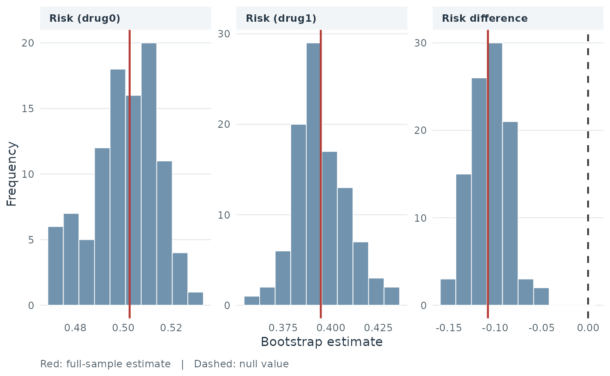

Average treatment effects for binary outcomes
Source:vignettes/Binary-examples.Rmd
Binary-examples.RmdThis vignette estimates population-average treatment effects for a synthetic binary outcome. For the corresponding CATE score fitting and validation, see the binary CATE example. For background on binary treatment-effect prediction, see Hoogland et al. (2021).
Example data
We consider a simulated dataset of patients with multiple sclerosis
(MS), in which relapse_count represents the number of
relapses observed during one year of follow-up. The outcome of interest
is binary: y = 1 if a patient has at least one relapse and
y = 0 otherwise. Relapse counts are generated using the
same model as simulate_count(). Everyone has the same
follow-up, and the outcome is fully observed. The followup
argument is measured in years: followup = 1 means one year
for every patient, while followup = 0.5 means six months.
Set threshold to a larger integer to define an event as
more than that many relapses, or change followup to study
another fixed horizon.
binaryExample <- simulate_binary(n = 4000, seed = 2026,
followup = 1, threshold = 0)
head(binaryExample)
#> age female previous_treatment previous_cost previous_number_symptoms
#> 1 4.6853017 0 drugB -0.04071778 0
#> 2 -9.7172169 1 drugB -0.07763572 >=2
#> 3 1.2531430 1 drugA 0.38461438 0
#> 4 -0.7627391 1 drugB -0.45026280 0
#> 5 -5.9997565 0 drugC 0.55030741 1
#> 6 -22.6448013 1 drugB -0.59281629 1
#> previous_number_relapses trt y years relapse_count
#> 1 0 drug1 1 1 1
#> 2 0 drug0 1 1 1
#> 3 0 drug1 1 1 1
#> 4 0 drug1 0 1 0
#> 5 1 drug1 1 1 2
#> 6 1 drug0 0 1 0
table(binaryExample$trt, binaryExample$y)
#>
#> 0 1
#> drug0 1003 855
#> drug1 1273 869
prop.table(table(binaryExample$trt, binaryExample$y), margin = 1)
#>
#> 0 1
#> drug0 0.5398278 0.4601722
#> drug1 0.5943044 0.4056956Treatment is assigned using age and previous treatment, so the treatment groups need not be comparable without adjustment. Age is centered at 48 years and previous cost is centered at 13,824 USD and divided by 20,172 USD. The simulation coefficients are illustrative and are not clinical estimates. Unlike a count rate ratio, the relapse risk difference depends on the selected threshold and follow-up period.
For the estimators and their assumptions, see Methods for estimating average treatment effects.
Unadjusted treatment comparison
We first compare the observed relapse proportions under drug1 and drug0.
relapse_risks <- with(binaryExample, tapply(y, trt, mean))
relapse_risks
#> drug0 drug1
#> 0.4601722 0.4056956The unadjusted risk difference for drug1 versus drug0 is calculated by subtracting the relapse proportion for drug0 from that for drug1. A negative value means a lower observed relapse proportion under drug1. Here, the unadjusted risk difference is -0.054, or -5.4 percentage points for drug1 minus drug0. This unadjusted comparison may reflect baseline differences between the groups rather than a genuine treatment effect.
The 95% confidence interval is -0.085 to -0.024, based on a normal approximation for two independent proportions.
Covariate-adjusted treatment comparison
Treatment assignment may differ according to baseline characteristics. We fit a multivariable binomial model adjusting for age, sex, previous treatment, previous medical cost, and previous relapses, as in the count example. The identity link estimates the risk difference directly (Naimi and Whitcomb 2020).
adjusted <- glm(
y ~ trt + age + female + previous_treatment + previous_cost +
previous_number_relapses,
data = binaryExample, family = binomial(link = "identity")
)
summary(adjusted)
#>
#> Call:
#> glm(formula = y ~ trt + age + female + previous_treatment + previous_cost +
#> previous_number_relapses, family = binomial(link = "identity"),
#> data = binaryExample)
#>
#> Coefficients:
#> Estimate Std. Error z value Pr(>|z|)
#> (Intercept) 0.4296033 0.0204141 21.044 < 2e-16 ***
#> trtdrug1 -0.0973253 0.0170384 -5.712 1.12e-08 ***
#> age 0.0056606 0.0009682 5.846 5.02e-09 ***
#> female 0.0535246 0.0171345 3.124 0.00179 **
#> previous_treatmentdrugB 0.0131217 0.0176378 0.744 0.45690
#> previous_treatmentdrugC -0.0326664 0.0205354 -1.591 0.11167
#> previous_cost 0.0398499 0.0163037 2.444 0.01452 *
#> previous_number_relapses 0.0228496 0.0087874 2.600 0.00932 **
#> ---
#> Signif. codes: 0 '***' 0.001 '**' 0.01 '*' 0.05 '.' 0.1 ' ' 1
#>
#> (Dispersion parameter for binomial family taken to be 1)
#>
#> Null deviance: 5468.8 on 3999 degrees of freedom
#> Residual deviance: 5397.6 on 3992 degrees of freedom
#> AIC: 5413.6
#>
#> Number of Fisher Scoring iterations: 3The adjusted risk difference for drug1 versus drug0 is captured by
the coefficient for trtdrug1 and estimated as -0.097 (95%
CI: -0.131 to -0.064). The interval is a model-based Wald interval. The
model assumes that the risk difference is the same at every covariate
value; under this assumption, the coefficient is also the risk
difference averaged over the study population. A causal interpretation
requires, among other assumptions, a correctly specified outcome model,
no unmeasured confounding, and adequate treatment overlap.
Population-average treatment effects using
atefit()
atefit(response = "binary") estimates the difference in
relapse probability under drug1 and drug0. Negative values favor drug1
because relapse is an adverse outcome. The estimator combines a logistic
outcome model and a treatment model (the propensity-score model), which
estimates the probability of receiving treatment 1 given the covariates.
Under the usual identification and regularity assumptions, the estimator
is consistent if either model is correctly specified. Causal
interpretation also requires well-defined treatments, no unmeasured
confounding, and adequate treatment overlap. Bootstrap samples provide
uncertainty estimates. These synthetic counts do not in general imply an
exactly logistic outcome model; the treatment model is correctly
specified by construction in this example. Chapter 5, “Understanding and
defining causal effects,” discusses marginal and conditional causal
effects (Nguyen et al. 2026).
The outcome formula excludes treatment: atefit() fits
the outcome model separately in each treatment arm.
ps.model includes the treatment on the left. Treatment
labels are ordered as drug0 and drug1. There is no follow-up offset for
this fixed-horizon binary outcome. The default
outcome_method = "logistic" is currently the only available
binary outcome method.
outcome_formula <- y ~ age + female + previous_treatment + previous_cost +
previous_number_relapses
ps_formula <- trt ~ age + previous_treatment
fit_ate <- atefit(
response = "binary", data = binaryExample,
outcome_model = outcome_formula, ps.model = ps_formula,
n.boot = 100, seed = 999
)
fit_ate
#> Average treatment effect (risk difference):
#>
#> estimate SE CI.lower CI.upper pvalue
#> risk.difference -0.1079285 0.0196987 -0.1465372 -0.06931972 4.278253e-08
#>
#> Estimated risks:
#>
#> estimate
#> 1 0.3947549
#> 2 0.5026833By default, logistic regression is used for the outcome model and for the propensity model.
Use coef() and confint() to extract the
risk difference and its confidence interval:
coef(fit_ate)
#> risk.difference
#> -0.1079285
confint(fit_ate)
#> 2.5 % 97.5 %
#> risk.difference -0.1465372 -0.06931972The output reports estimated population-average relapse risks of 0.395 under drug1 and 0.503 under drug0, shown in that order. Their difference (drug1 minus drug0) is -0.108, or -10.8 percentage points. A negative difference favors drug1. The output also reports the bootstrap standard error, a 95% Wald confidence interval of -0.147 to -0.069, and a two-sided Wald p-value for the risk difference. The causal interpretation depends on the assumptions described above.
Diagnostics
A causal interpretation of this estimate relies on several assumptions, including consistency and the stable unit treatment value assumption, conditional exchangeability, and positivity; Chapter 5 discusses these assumptions (Nguyen et al. 2026). Positivity requires that both treatments are possible at each relevant combination of covariates in the target population. The following diagnostics summarize estimated propensity-score overlap and treatment-weight variability in the analysis sample. They can help investigate potential practical positivity problems, but cannot establish that the positivity assumption holds. The table reports propensity scores before truncation and inverse treatment weights after truncation. The outside-range count is the number of patients whose estimated score falls outside the observed range in the other treatment group; its percentage is within the patient’s own treatment group:
diagnostics(fit_ate, type = "propensity")| Diagnostic | drug0 | drug1 |
|---|---|---|
| Patients, n | 1858 | 2142 |
| Propensity score, median (min-max) | 0.43 (0.04-0.91) | 0.64 (0.05-0.91) |
| Outside other group’s range, n (%) | 3 (0.2%) | 0 (0.0%) |
| Truncated below / above, n | 0 / 0 | 0 / 0 |
| Treatment weight, median (max) | 1.76 (11.31) | 1.56 (20.71) |
| Effective sample size | 1397 | 1611 |
In this example, 3 patients receiving drug0 and 0 receiving drug1
have estimated scores outside the observed range in the other group. The
effective sample sizes are 1397 and 1611, respectively. The effective
sample size summarizes how concentrated the treatment weights are within
each group: smaller values indicate that fewer patients carry a larger
share of the total weight, which can reduce precision. These summaries
depend on the fitted treatment model and do not establish positivity,
covariate balance, conditional exchangeability, or the absence of
unmeasured confounding. Use layout = "arms" for unrounded
numeric results.
Use plot() to inspect the bootstrap estimates:

The plot shows bootstrap relapse risks for drug0 (risk0)
and drug1 (risk1), followed by their risk difference. Red
lines mark the full-sample estimates; the dashed line marks zero in the
risk-difference panel. This example uses only 100 bootstrap replicates
to keep the vignette fast; use more for an analysis. If a bootstrap
model fails, the package reports unavailable inference rather than
silently dropping it. Augmented estimates of risk are not constrained to
lie within 0 and 1.
Compare risk differences
All three estimates compare drug1 with drug0 on the same absolute
probability scale. The unadjusted comparison describes the observed
treatment groups. The identity-link binomial estimate uses the outcome
model alone, whereas atefit() adds a propensity-score
correction. Differences between the adjusted estimates can reflect their
different models and assumptions. The unadjusted interval is based on
the two-proportion normal standard error. The binomial model uses a
model-based Wald interval; atefit() uses a Wald interval
based on its bootstrap standard error.
| Estimation method | Interpretation | Risk difference | 95% CI |
|---|---|---|---|
| Unadjusted observed proportions | Unadjusted observed group difference | -0.054 | -0.085 to -0.024 |
| Adjusted binomial identity-link model | Conditional; also marginal under the constant-difference model | -0.097 | -0.131 to -0.064 |
| Doubly robust atefit() | Marginal population-average difference | -0.108 | -0.147 to -0.069 |
The unadjusted difference compares the observed treatment groups; it
is not necessarily a causal marginal effect. The binomial model’s
coefficient is conditional on the included covariates and, because it
assumes the same risk difference for every patient, equals its
model-implied marginal difference. atefit() targets the
population-average difference without requiring a constant conditional
risk difference. Causal interpretations require the assumptions
described above.
A risk difference of -0.10 corresponds to 10 percentage points fewer patients with a relapse under drug1. The intervals describe uncertainty around each estimate; they do not test whether the methods differ from one another.